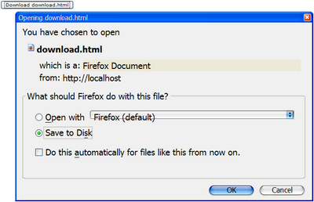

The XUL component set supports the following common dialogs to simplify some common tasks.
The org.zkoss.zul.Messagebox class provides a set of utilities to show message boxes. It is typically used to alert user when an error occurs, or to prompt user for an decision.
if (Messagebox.show("Remove this file?", "Remove?", Messagebox.YES | Messagebox.NO, Messagebox.QUESTION) == Messagebox.YES) {
...//remove the file
}
Since it is common to alert user for an error, a global function called alert is added for zscript. The alert function is a shortcut of the show method in the Messagebox class. In other words, The following two statements are equivalent.
alert("Wrong");
Messagebox.show("Wrong");
Notice that Messagebox is a modal window so it shares the same constraint: executable only in an event listener. Thus, the following codes will fail. Refer to the Modal Windows and Event Listeners section above for more descriptions.
<window title="Messagebox not allowed in paging loading">
<zscript>
//failed since show cannot be called in paging loading
if (Messagebox.show("Redirect?", "Redirect?",
Messagebox.YES | Messagebox.NO, Messagebox.QUESTION) == Messagebox.YES)
Executions.sendRedirect("another.zul");
</zscript>
</window>
The org.zkoss.zul.Fileupload class provides a set of utilities to prompt a user for uploading file(s) from the client to the server. Once of the get methods is called, a file upload dialog is shown at the browser to prompt the user for specifying file(s) for uploading. It won't return until user has uploaded a file or presses the cancel button.
<window title="Fileupload Demo" border="normal">
<image id="image"/>
<button label="Upload">
<attribute name="onClick">{
Object media = Fileupload.get();
if (media instanceof org.zkoss.image.Image)
image.setContent(media);
else if (media != null)
Messagebox.show("Not an image: "+media, "Error",
Messagebox.OK, Messagebox.ERROR);
}</attribute>
</button>
</window>
If you allow users to upload multiple files at once, you can specify the maximal allowed number as follows.
<window title="fileupload demo" border="normal">
<button label="Upload">
<attribute name="onClick"><![CDATA[{
Object media = Fileupload.get(5);
if (media != null)
for (int j = 0; j < media.length; ++j) {
if (media[j] instanceof org.zkoss.image.Image) {
Image image = new Image();
image.setContent(media[j]);
image.setParent(pics);
} else if (media[j] != null) {
Messagebox.show("Not an image: "+media[j], "Error",
Messagebox.OK, Messagebox.ERROR);  }
}
}]]></attribute>
</button>
<vbox id="pics"/>
</window>
}
}
}]]></attribute>
</button>
<vbox id="pics"/>
</window>
The fileupload component is not a modal dialog. Rather, it is a component, so it is placed inline with other components.
Note: In addition to providing the static get methods for opening the file upload dialogs, org.zkoss.zul.Fileupload itself is a component. It is the so-called fileuplod component.

For example,
<image id="img"/> Upload your hot shot: <fileupload onUpload="img.setContent(event.media)"/>
When the Upload button is pressed, the onUpload event is sent with an instance of the org.zkoss.zk.ui.event.UploadEvent event. You can then retreive the content of the upload files by use of the getMedia or getMedias methods.
Notice that getMedia and getMedias return null to indicate that no file is specified but the Upload button is pressed.
In addition to onUpload, the onClose event is sent to notify that either the Upload button or the Cancel button is pressed. By default, it simply invalidates the fileupload component, i.e., all fields are cleaned up and redrawn. If you listen to this event to have the custom behavior.
The org.zkoss.zul.Filedownload class provides a set of utilities to prompt a user for downloading a file from the server to the client. Unlike the iframe component that displays the file in the browser window, a file download dialog is shown at the browser if one of the save methods is called. Then, the user can specify the location in his local file system to save the file.
<button label="Download download.html">
<attribute name="onClick">{
java.io.InputStream is = desktop.getWebApp().getResourceAsStream("/test/download.html");
if (is != null)
Filedownload.save(is, "text/html", "download.html");
else
alert("/test/download.html not found");
}</attribute>
</button>